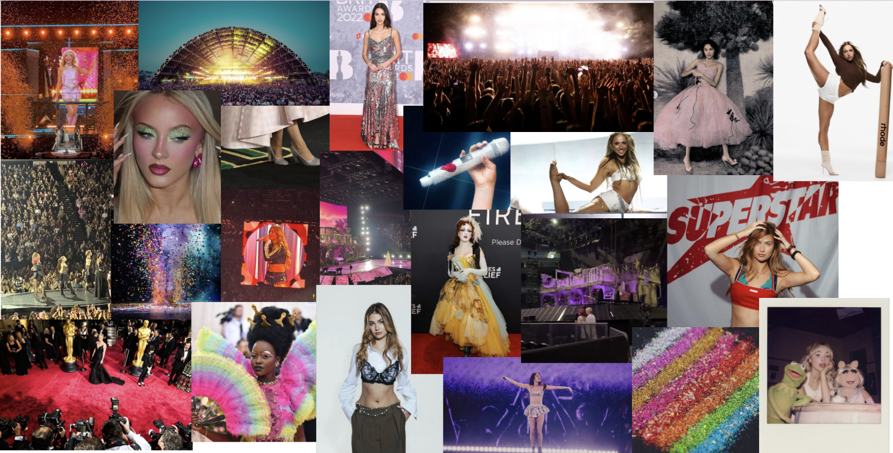
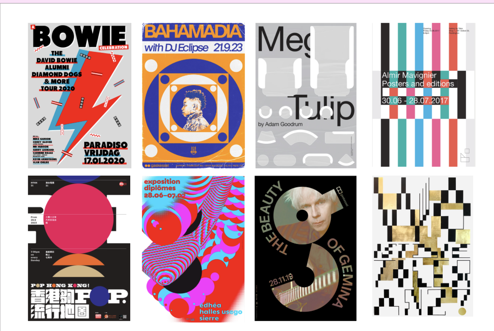

MIJN INSPIRATIE
Voor mijn Digital Garden heb ik inspiratie gezocht die past bij mijn sfeerwoorden: glamoureus, creatief en energiek.


⭐️ MY DIGITAL GARDEN ⭐️
Mijn inspiratie voor mijn sfeerwoorden
Voor mijn Digital Garden heb ik inspiratie gezocht die past bij mijn sfeerwoorden: glamoureus, creatief en energiek.

